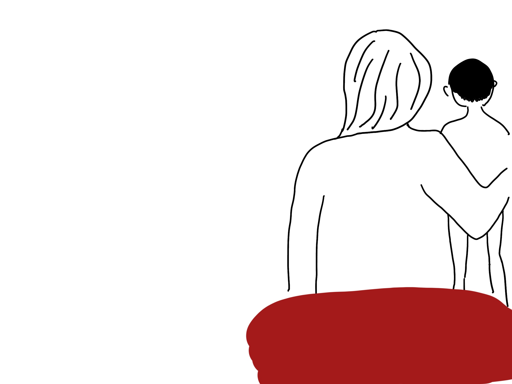
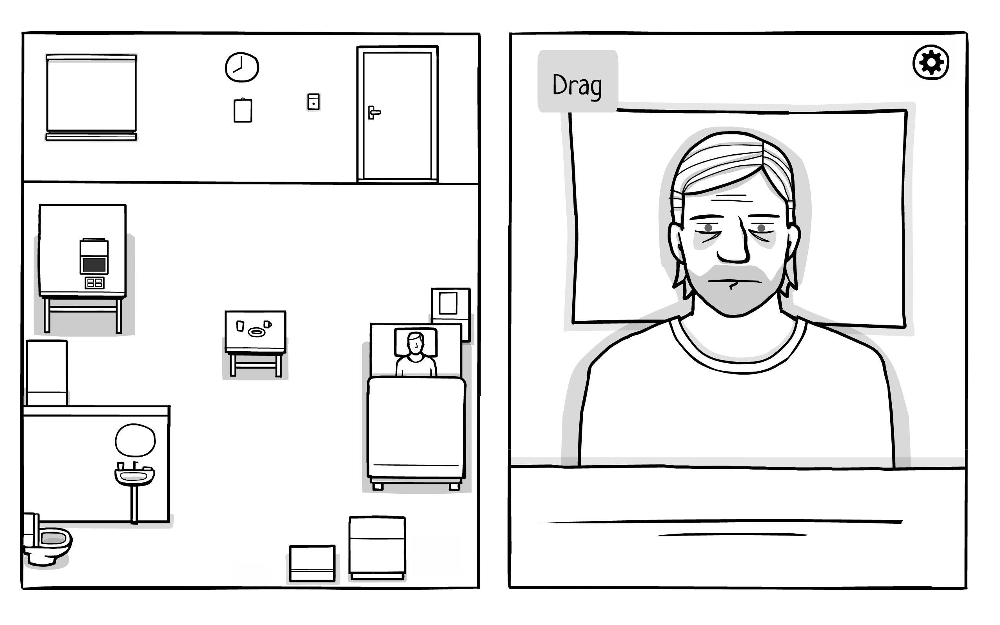
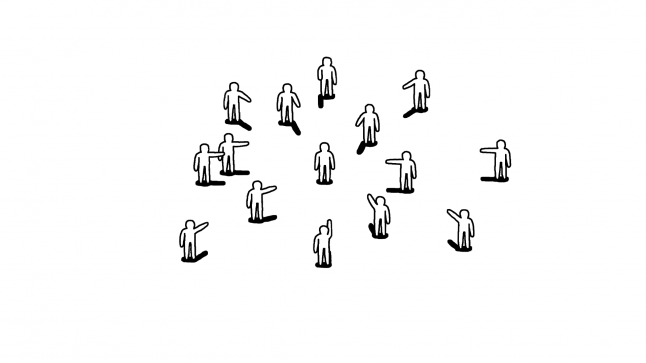

- Scrub the keyboard to remove dirt
- Make choice in dialogue
- Manage the money earned
- The player’s choice leads to different endings
- The player can use money to decorates their own bathhouse.
- Sensation: the removing dirt visual and sound effect tries to
make player satisfied
- Narrative: guest’s stories
- Exploration: The player doesn’t know who comes next
- Expression: Decorate the bathhouse as the player want
I have designed five characters so far, all very different in age, class and profession, but sharing a common identity: women. I hope to show as many and as rich a portrayal of women as possible, and their most realistic plight.
| Name | Age | Job | Image | Story |
| Alice | 15 | Student | Alice is an ordinary high school girl who has recently been suffering from appearance anxiety. Her crush has a very beautiful girlfriend. She tries hard to dress up, but she always makes a mess of it and gets ridiculed, so she feels very inferior and depressed. | |
| Susan | 45 | House Wife | Susan is a mother of three children. She and her husband have been in a broken relationship for many years, but have been holding back from divorce for the sake of their children. Recently, the youngest child is going to college soon and she finally made up her mind. | |
| Caroline | 28 | Product Manager | Caroline works as a product manager in a first-tier Internet company. She is very good at her job, but in the workplace, good opportunities are always given to male product managers first, and she often encounters questions and molestation about her ability because of her appearance. She was very unconvinced, but did not know how to fight for herself. | |
| Weili | 34 | Boxer | Weili was 30 years old when she realized her passion in life was boxing. She quit her job and devoted herself full-time to training hard. She was very talented and beat every opponent in the country within five years. However, her family did not understand, believing that a woman was incomplete without marriage and that she would not be able to marry if she took up boxing. | |
| Amy | 30 | Service Assistant |  | Amy works as a counter clerk in a cosmetics store. She works very hard, standing for eight hours a day, picking up her children and cooking for her family. Her husband has been coming home later and later from playing mahjong, and she feels that this life is going to be unbearable. |
Inspired by The White Door, I split my game screen into two parts. I make this decision for the following reason. First, there is a need to actually show the process of dirt being removing off. This is important to give the player the mental satisfaction of removing bad thing. Therefore, the detail of woman back need to be showed. Second, if there is only woman backs, it will be boring. I add animation and environment to make the game more enriched. The bathhouse environment can also provide possibilities for the further design – for example, player can use their coins to decorate the bathhouse, or make diegetic UI elements like clock, spa stuff etc.
Visually I borrowed from Playable Studios' Kids. I used simple lines to represent the environment and characters, and avoided showing what the characters look like. I took this decision for two reasons. First, since the environment is a female bathhouse, I didn't want to make players of other genders think too much about a scene they hadn't been to before. Second, making the characters anonymous was also due to the specificity of the subject matter. I didn‘t want to make naked women the object of male gaze again, to be judged in terms of body and appearance, thus running counter to the original purpose of the game.
